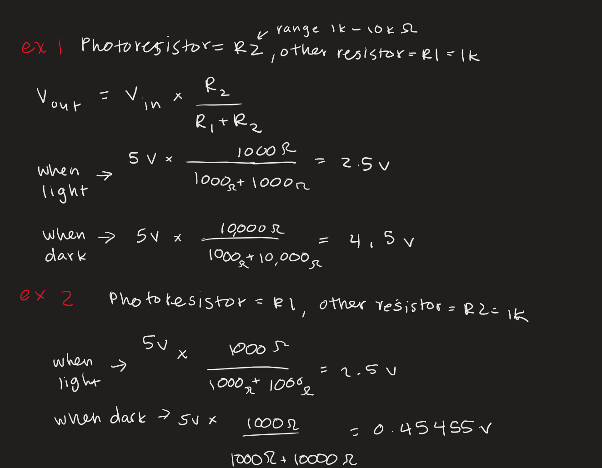
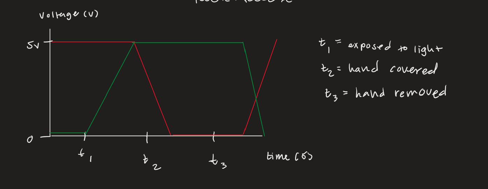

Overview
For this assignment, I used a photoresistor to control the brightness of 2 LEDs. When the photoresistor was exposed to light, the red light would be brighter. When it was covered, the green light would be brighter.

I used a 1k resistor for the photoresistor voltage divider, and 220 ohm resistors for each LED. To decide the 1k resistor, I tested different resistors with the outputed range I was recieving.
Code
Here is the code I used to make the LED blink:
int greenLedPin = 11; // LED pin
int redLedPin = 10;
int analogInPin = A0; // Analog input pin
void setup() {
//setting up led pins as output
pinMode(greenLedPin, OUTPUT);
pinMode(redLedPin,OUTPUT);
Serial.begin(9600); //starts serial communication
}
void loop() {
int sensorValue; //stores light sensor value
int greenMappedValue;//brightness of green led
int redMappedValue;//brightness of red led
// Read photoresistor value from analog pin
sensorValue = analogRead(analogInPin);
//constrained values based on readings of sensor values
sensorValue = constrain(sensorValue, 70, 175);
//printing sensor value
Serial.print("Sensor Value: ");
Serial.print(sensorValue);
Serial.print("\t");
// map the sensor range (70–175) to LED brightness range (0–255)
// for green LED: brighter in dark, dimmer in light
greenMappedValue = map(sensorValue, 70, 175, 255, 0);
// for red LED: dimmer in dark, brighter in light (opposite of green)
redMappedValue = map(sensorValue, 70, 175, 0, 255);
//printing mapped values to serial monitor
Serial.print("Green Mapped Value: ");
Serial.println(greenMappedValue);
Serial.print("Red Mapped Value: ");
Serial.println(redMappedValue);
//delaying the led switch to make the light change more visible
delay(100);
//writing the brightness values associated with led pin
analogWrite(greenLedPin, greenMappedValue);
analogWrite(redLedPin, redMappedValue);
}
Additional Questions
1. Based on my calculations, R1 and R2 could be either the photoresistor or the 1k resistor. When exposed to light, the values are the same, but when they are dark, they are both less than the light value.
2. This is my graph of the red and green LED voltages over time as I cover and uncover the photoresistor.
With 8 and 10 bit values, the mapped value range looks like mappedValue = map(sensorValue, 0, 1023, 0, 255). However, with 10 bit and 16 bit values, the mapped value range looks like mappedValue = map(sensorValue, 0, 65535, 0, 1023). From changing the bit values, the proportional difference between the input and output ranges remains the same, but the absolute values change.
I used AI tools to help explain some of the additional conceptual questions, but I answered the questions using my own values and referred to the slides in class for formula use.